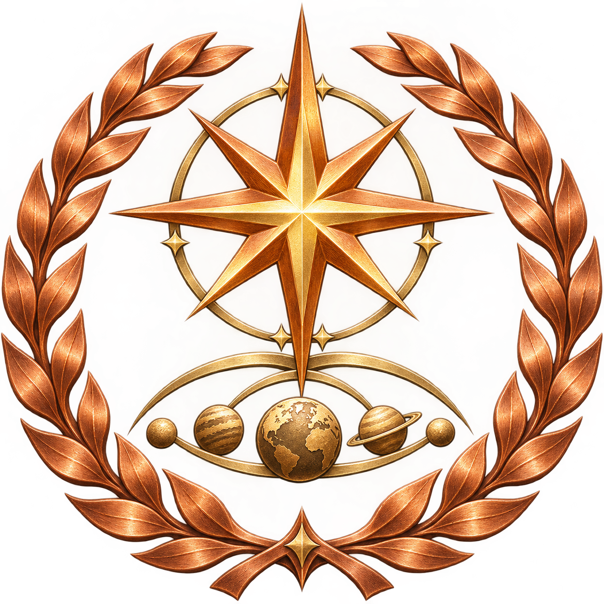
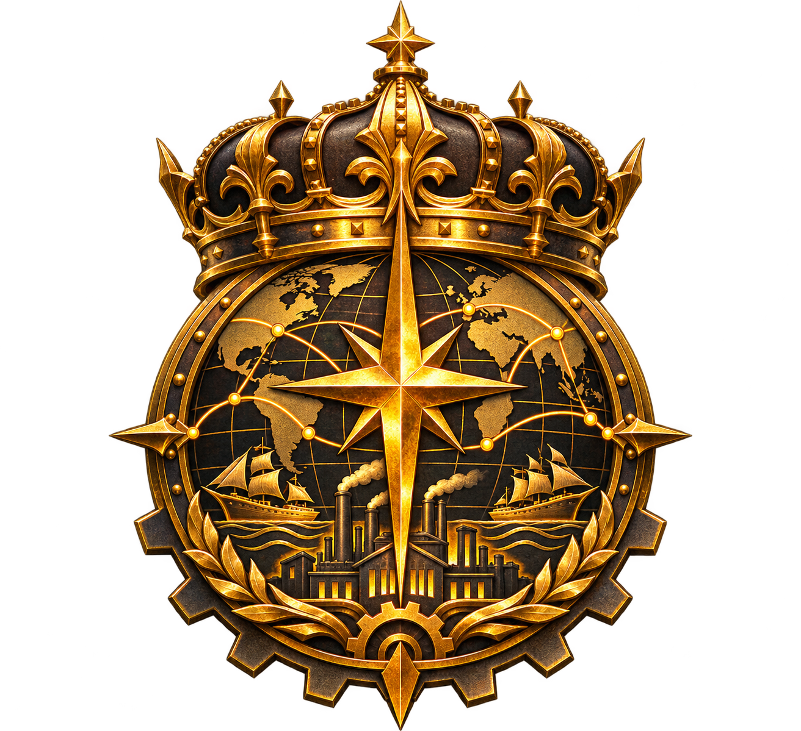
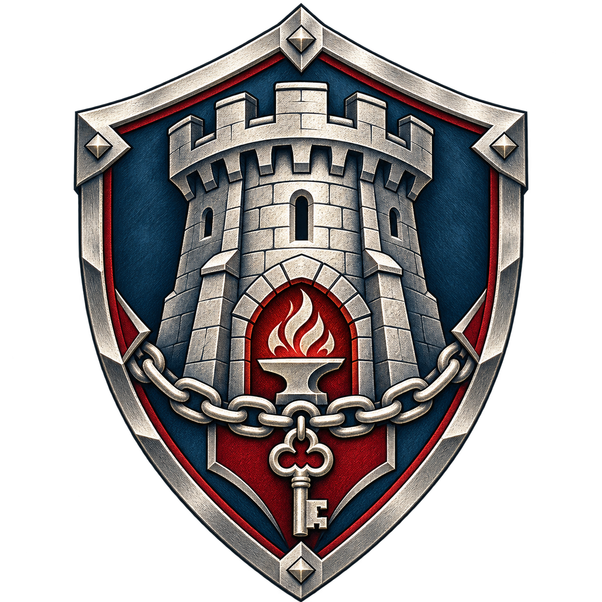
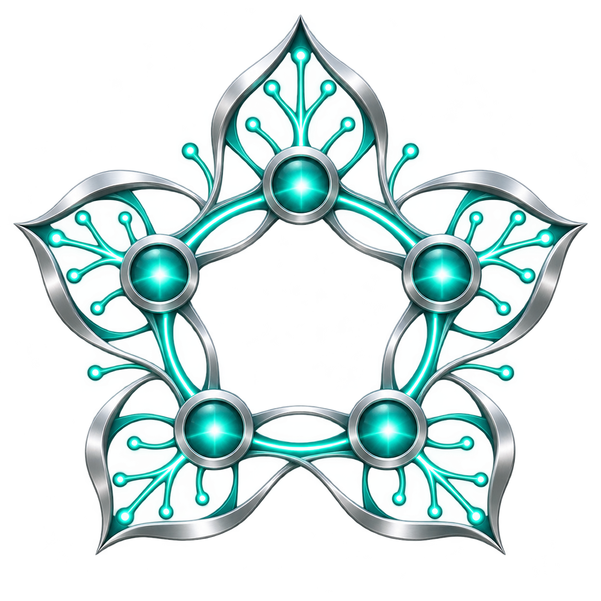

01 / BUND
Konföderation
Selbstbestimmte Welten entscheiden gemeinsam über Angelegenheiten, die den Bund betreffen.
Dossier öffnen ↗Fünf Wege, Zivilisation über Sterne hinweg zu organisieren. Jede Fraktion prägt ihre Welten durch eine eigene Vorstellung von Macht, Freiheit und Zusammenhalt.

Selbstbestimmte Welten entscheiden gemeinsam über Angelegenheiten, die den Bund betreffen.
Dossier öffnen ↗
Ein einziger Souverän lenkt ein Reich, in dem Handel, Einfluss und Besitz die Ordnung bestimmen.
Dossier öffnen ↗
Gilden und ihre Punkte bestimmen, welche Vorhaben möglich werden und wer sie tragen darf.
Dossier öffnen →
Ein Netzwerk entscheidet als Ganzes, während seine Mitglieder in ihrem Alltag eigenständig handeln.
Dossier folgt • • •Unabhängige Reisende und Gemeinschaften ziehen ihre eigenen Wege durch das All.
Dossier folgt • • •